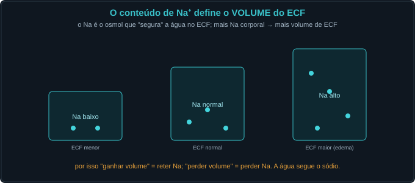
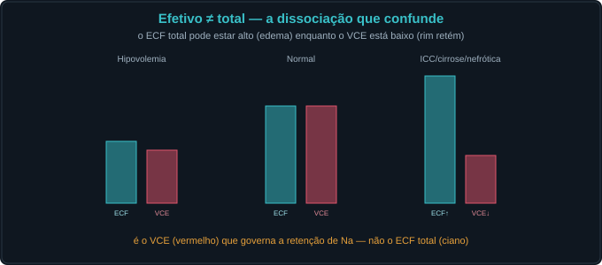
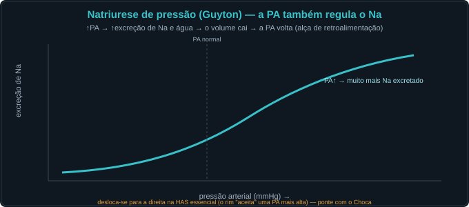
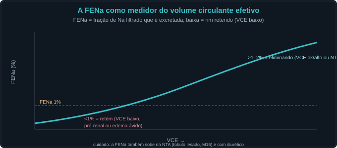
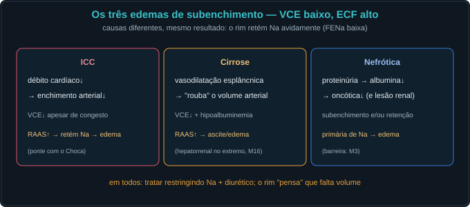

Conceito — sódio, volume e o que o rim sente
Defender o volume é homeostasia. O rim regula o conteúdo de Na⁺
para manter o volume circulante efetivo. As Fig. 1–13 voltam no Caso, na Trilha e na Avaliação (algumas
reaparecem nos exercícios). Atribuição em CREDITS.md (em curadoria).
1. Sódio é VOLUME, não concentração
O Na⁺ é o osmol do ECF: o conteúdo de Na define quanto volume o ECF retém. A concentração de Na (natremia) é um problema de água (M10). Dois eixos distintos.



2. O volume circulante efetivo e seus sensores
O que o rim sente não é o ECF total, mas o VCE (enchimento arterial efetivo), captado por barorreceptores, mácula densa e átrios.



3. Quem retém e quem elimina o Na
VCE baixo → RAAS/SNS (retêm); volume alto → ANP/BNP (eliminam); e a pressão arterial também elimina Na (natriurese de pressão, Guyton).



4. A FENa como medidor do VCE
A fração de Na excretada revela o que o rim está fazendo: <1% = retendo (VCE baixo); mais alta = eliminando (ou túbulo lesado, M16).

5. Edema, subenchimento e o terceiro espaço
Edema = retenção de Na. Em ICC/cirrose/nefrótica, o ECF total sobe mas o VCE cai (subenchimento) → o rim retém ainda mais.



Caso — oito atos, decida antes de revelar
Homem com edema de membros e ascite. Vamos ler o volume pelo que o rim sente.
Trilha socrática — treze perguntas que constroem o conceito
1. O que o conteúdo de Na⁺ determina?
O VOLUME do ECF: o Na é o osmol que retém água. Mais Na corporal → mais volume.
2. E a concentração de Na (natremia)?
É um problema de ÁGUA (tonicidade, M10), não de volume. Dois eixos distintos.
3. O que é o volume circulante efetivo (VCE)?
O enchimento arterial efetivo — o quanto o leito arterial está "cheio" e perfundindo. É o que o rim sente.
4. Quais os sensores de volume?
Baro arterial (carótida/aferente), mácula densa (NaCl distal) e baro atrial (estiramento → ANP).
5. O que o rim faz com o VCE baixo?
Ativa RAAS e simpático → retém Na em vários segmentos → FENa baixa.
6. E com o volume/átrios cheios?
Libera ANP/BNP → natriurese e vasodilatação. O BNP é marcador de ICC.
7. O que é a natriurese de pressão?
↑PA → ↑excreção de Na (Guyton): a alça que liga rim e pressão; desloca-se na HAS.
8. Por que "efetivo ≠ total"?
O ECF total pode estar alto (edema) com VCE baixo (subenchimento) — o rim retém Na olhando o VCE, não o total.
9. O que a FENa indica?
<1% = retenção ávida (VCE baixo: pré-renal ou edema); mais alta = eliminando (ou NTA, túbulo lesado).
10. O que é edema, em uma frase?
Retenção renal de Na (com vazamento de Starling ao interstício). Tratar = sódio para fora.
11. ICC, cirrose e nefrótica têm o quê em comum?
VCE baixo (subenchimento) com ECF total alto → retenção ávida de Na (FENa baixa).
12. O que é o terceiro espaço?
Líquido sequestrado (ascite, derrames, edema intestinal): ECF total alto, VCE baixo. Repor volume é difícil.
13. Em que sentido isto é homeostasia?
O rim mantém o volume circulante efetivo (a perfusão) ajustando o conteúdo de Na — apesar de ingestas e perdas muito variáveis.
Instrumento — a FENa × volume circulante efetivo
Os controles do Lab alimentam esta curva. VCE baixo → FENa < 1% (retém); VCE alto → natriurese. A pressão desloca a curva (natriurese de pressão).
Laboratório — volume efetivo, ECF total e pressão
| Variável | Atual | Comentário |
|---|---|---|
| Aldosterona (relativa) | — | VCE↓ → ↑ |
| Simpático (relativo) | — | VCE↓ → ↑ |
| ANP/BNP (relativo) | — | ECF↑ → ↑ |
| FENa (%) | — | <1% = retém |
| Na⁺ urinário (mmol/L) | — | baixo = retém |
| Edema? | — | ECF total alto |
| Padrão | — | — |